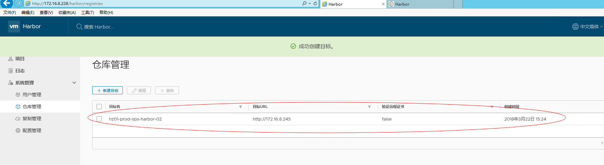

| 版本 | 日期 | 状态 | 修订人 | 摘要 |
|---|---|---|---|---|
| V1.0 | 2018-04-27 | 创建 | 开源方案 | 初始版本 |
Harbor 是 Vmwar 公司开源的 企业级的 Docker Registry 管理项目
它主要 提供 Dcoker Registry 管理UI，可基于角色访问控制, AD/LDAP 集成，日志审核等功能，完全的支持中文。
Harbor 的所有组件都在 Dcoker 中部署，所以 Harbor 可使用 Docker Compose 快速部署。
| 主机角色 | IP地址 | 操作系统 | 摘要 |
|---|---|---|---|
| 主节点(Master) | hz01-prod-ops-harbor-01(172.16.8.228) | CentOS Linux release 7.3.1611 (Core) x86_64 | harbor安装及配置 |
| 从节点(Node) | hz01-prod-ops-harbor-02(172.16.8.245） | CentOS Linux release 7.3.1611 (Core) X86-64 | 主节点数据复制 |
[root@hz01-prod-ops-harbor-02 /opt]# wget https://storage.googleapis.com/harbor-releases/release-1.4.0/harbor-online-installer-v1.4.0.tgz
[root@hz01-prod-ops-harbor-02 /opt]# tar xvf harbor-online-installer-v1.4.0.tgz
[root@hz01-prod-ops-harbor-02 /opt/harbor]# yum install docker
[root@hz01-prod-ops-harbor-02 /opt/harbor]# yum install python2-pip
[root@hz01-prod-ops-harbor-02 /opt/harbor]# yum install docker-compose
[root@hz01-prod-ops-harbor-01 /opt/harbor]# vim /etc/sysconfig/docker
{
"registry-mirrors": ["http://ef017c13.m.daocloud.io"]
}
[root@hz01-prod-ops-harbor-02 /opt/harbor]# vim /opt/harbor/harbor.cfg
# hostname 设置访问地址，支持IP，域名，主机名，禁止设置127.0.0.1
hostname = reg.ops.com
# 访问协议，可设置 http,https
ui_url_protocol = http
# harbor WEB UI登陆使用的密码
harbor_admin_password = Harbor12345
# 认证方式，这里支持多种认证方式，默认是 db_auth ，既mysql数据库存储认证。
# 这里还支持 ldap 以及 本地文件存储方式。
auth_mode = db_auth
# mysql root 账户的 密码
db_password = root123
self_registration= on
use_compressed_js= on
max_job_workers= 3
verify_remote_cert= on
customize_crt= on
#这些需要修改的其他的参数可以保持默认
[root@hz01-prod-ops-harbor-02 /opt/harbor]# cd /opt/harbor
[root@hz01-prod-ops-harbor-02 /opt/harbor]# ./install.sh
[root@hz01-prod-ops-harbor-02 /opt/harbor]# docker-compose ps
Name Command State Ports
---------------------------------------------------------------------------------------------------
harbor-adminserver /harbor/start.sh Up
harbor-db /usr/local/bin/docker-entr ... Up 3306/tcp
harbor-jobservice /harbor/start.sh Up
harbor-log /bin/sh -c /usr/local/bin/ ... Up 127.0.0.1:1514->10514/tcp
harbor-ui /harbor/start.sh Up
nginx nginx -g daemon off; Up 0.0.0.0:443->443/tcp, 0.0.0.0:4443->4443/tcp, 0.0.0.0:80->80/tcp
registry /entrypoint.sh serve /etc/ ... Up 5000/tcp
[root@hz01-prod-ops-harbor-02 /opt/harbor]# docker login reg.ops.com
Username: admin
Password:
Error response from daemon: Get https://reg.ops.com/v1/users/: dial tcp 172.16.8.245:443: getsockopt: connection refused
#这里配置的是http，docker login默认走的是https.
[root@hz01-prod-ops-harbor-02 /opt/harbor]# cat /etc/docker/daemon.json
{
"registry-mirrors": ["http://ef017c13.m.daocloud.io"],
"insecure-registries": [ "reg.ops.com"]
}
[root@hz01-prod-ops-harbor-02 /opt/harbor]# systemctl daemon-reload
[root@hz01-prod-ops-harbor-02 /opt/harbor]# systemctl restart docker
[root@hz01-prod-ops-harbor-02 /opt/harbor]# docker login hz01-prod-ops-harbor-02.sysadmin.xinguangnet.com
Username: admin
Password:
Login Succeeded
登陆harbor，创建一个test测试的项目:
#公网上随便拉个镜像
[root@hz01-prod-ops-harbor-02 /opt/harbor]# docker pull mongo
[root@hz01-prod-ops-harbor-02 /opt/harbor]# docker images
REPOSITORY TAG IMAGE ID CREATED SIZE
docker.io/mongo latest 5b1317f8158f 7 days ago 365.9 MB
[root@hz01-prod-ops-harbor-02 /opt/harbor]# docker tag mongo hz01-prod-ops-harbor-02.sysadmin.xinguangnet.com/test/mongodb:1.0
[root@hz01-prod-ops-harbor-02 /opt/harbor]# docker images
REPOSITORY TAG IMAGE ID CREATED SIZE
docker.io/mongo latest 5b1317f8158f 7 days ago 365.9 MB
hz01-prod-ops-harbor-02.sysadmin.xinguangnet.com/test/mongodb 1.0 5b1317f8158f 7 days ago 365.9 MB
[root@hz01-prod-ops-harbor-02 /opt/harbor]# docker push hz01-prod-ops-harbor-02.sysadmin.xinguangnet.com/test/mongodb:1.0
The push refers to a repository [hz01-prod-ops-harbor-02.sysadmin.xinguangnet.com/test/mongodb]
99099bc0f52d: Pushed
5388bfbc2c01: Pushed
d6ac487f7716: Pushed
2ecbdcef31f1: Pushed
4786aaf122f1: Pushed
b597eb624250: Pushed
d1a481118c6e: Pushed
217a81d3bde9: Pushed
54e8db6ab32d: Pushed
43efe85a991c: Pushed
1.0: digest: sha256:82fb1f2483179a7c26ac603d5ad0f9cf6992a27f272c82e277371a96657b799b size: 2407
根据上文创建一个openshift的项目，这里不做演示了。

#推送一个镜像到openshift项目
[root@hz01-prod-ops-harbor-01 /root]# docker tag docker.io/mongo 172.16.8.228/openshift/mongodb:1.0
[root@hz01-prod-ops-harbor-01 /root]# docker push 172.16.8.228/openshift/mongodb:1.0
The push refers to a repository [172.16.8.228/openshift/mongodb]
99099bc0f52d: Pushed
5388bfbc2c01: Pushed
d6ac487f7716: Pushed
2ecbdcef31f1: Pushed
4786aaf122f1: Pushed
b597eb624250: Pushed
d1a481118c6e: Pushed
217a81d3bde9: Pushed
54e8db6ab32d: Pushed
43efe85a991c: Pushed
1.0: digest: sha256:82fb1f2483179a7c26ac603d5ad0f9cf6992a27f272c82e277371a96657b799b size: 2407
#根据文件定义数据文件放在/data/database/目录下
[root@hz01-prod-ops-harbor-01 /opt/harbor]# vim docker-compose.yml
mysql:
image: vmware/harbor-db:v1.4.0
container_name: harbor-db
restart: always
volumes:
- /data/database:/var/lib/mysql:z
[root@hz01-prod-ops-harbor-01 /data/database]# ls /data/database/
aria_log.00000001 aria_log_control created_in_mariadb.flag ib_buffer_pool ibdata1 ib_logfile0 ib_logfile1 ibtmp1 multi-master.info mysql performance_schema registry tc.log